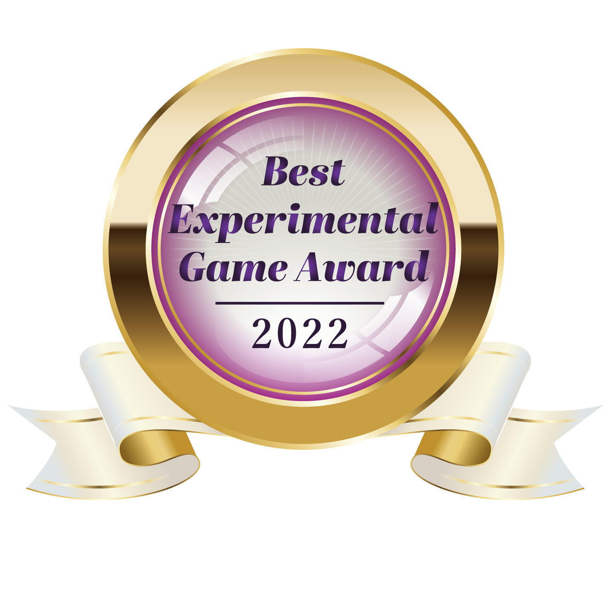
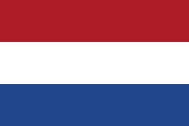
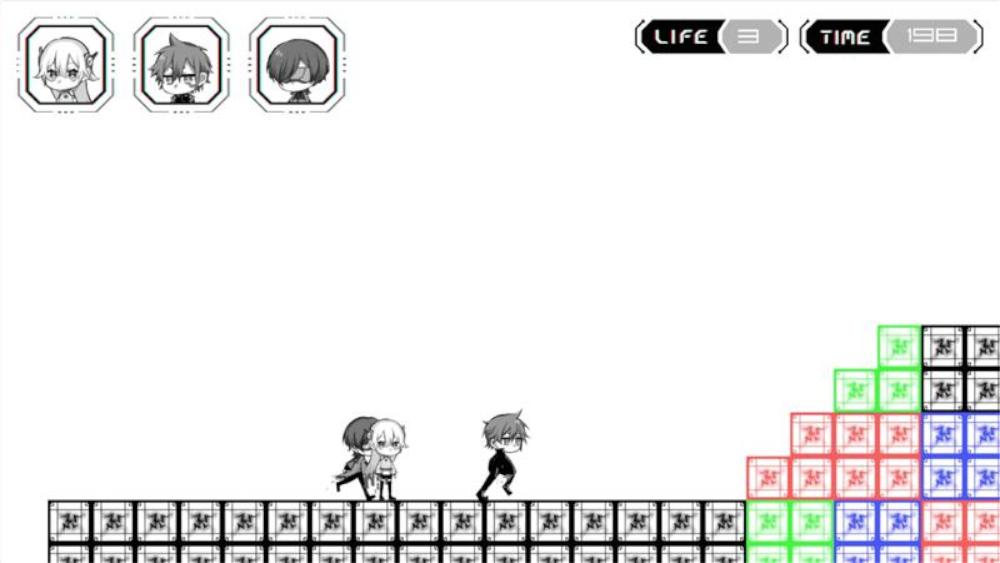
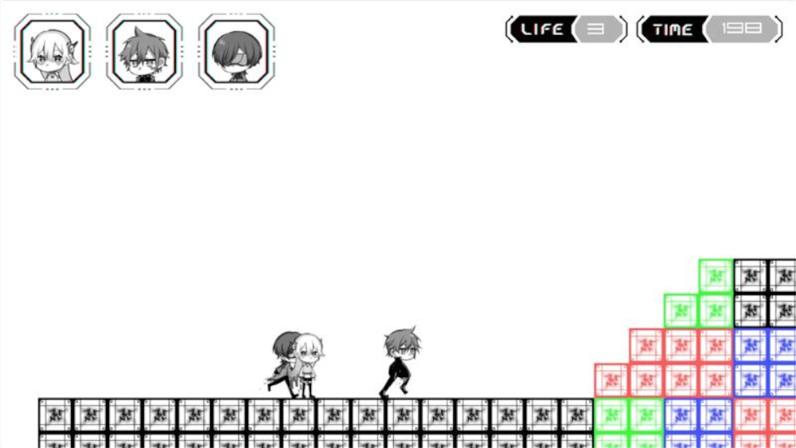
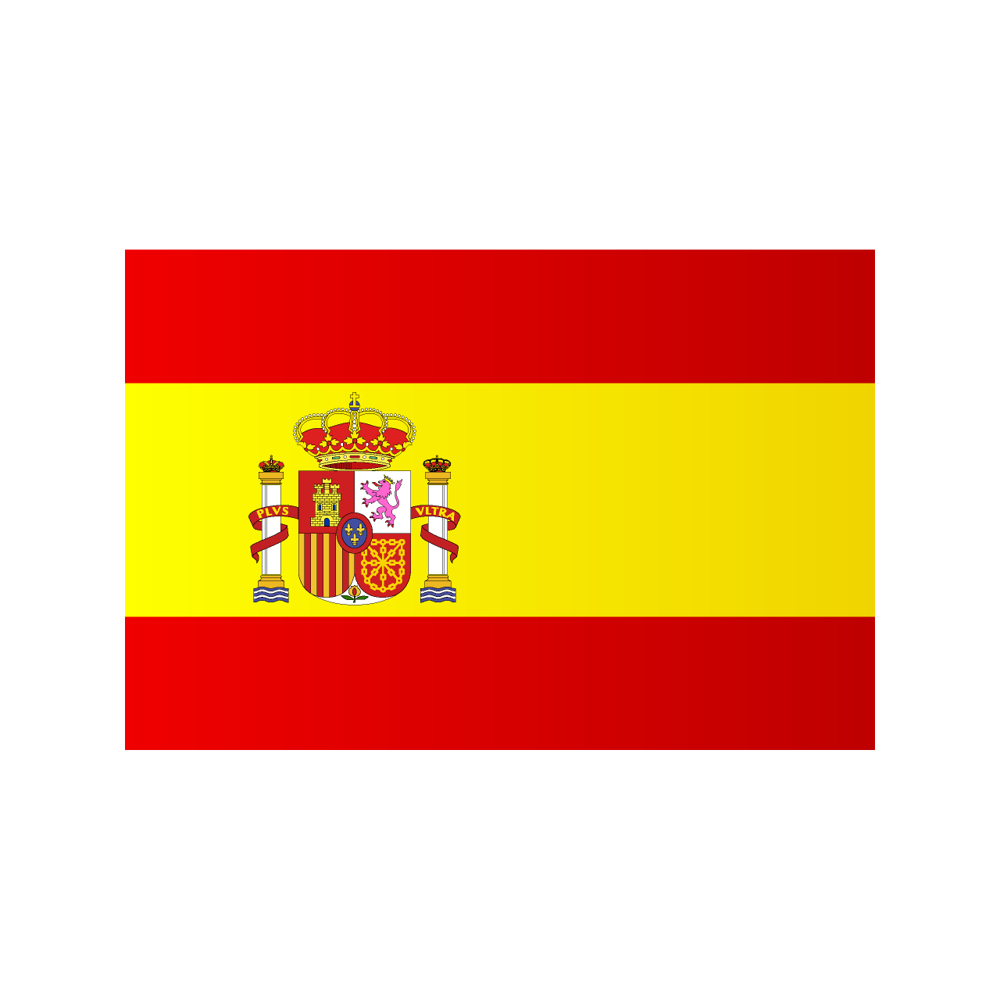
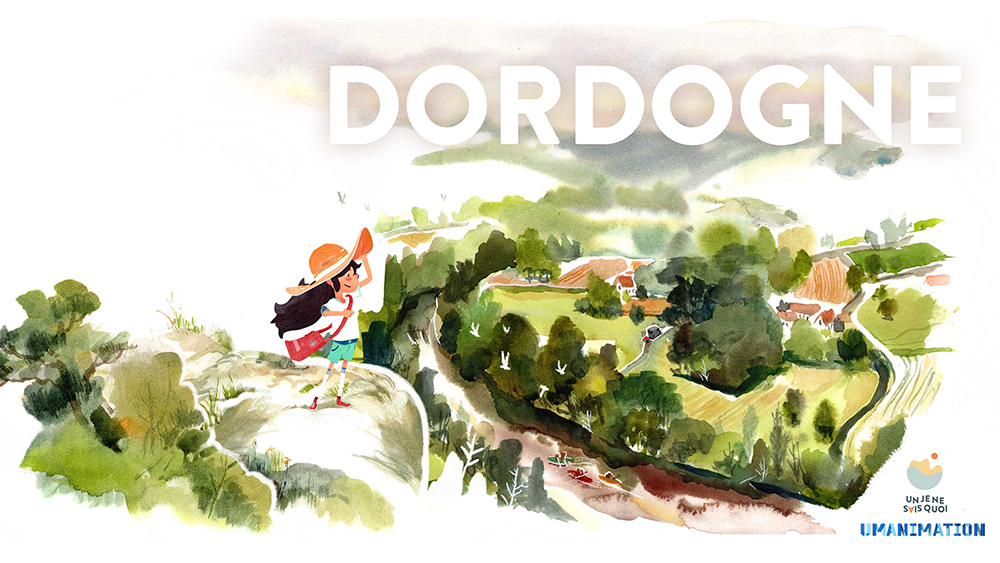
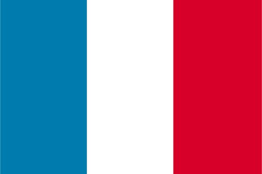
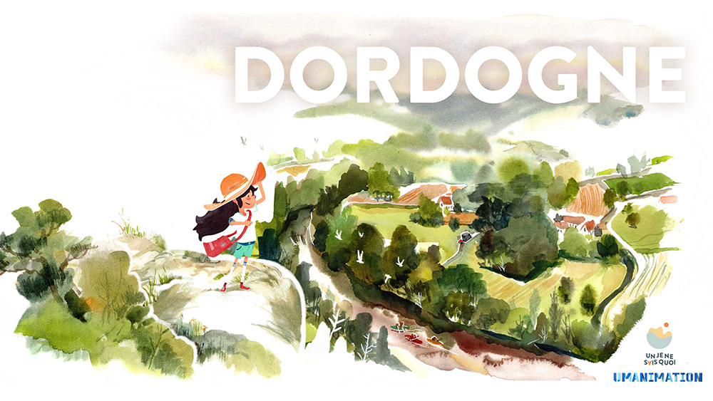
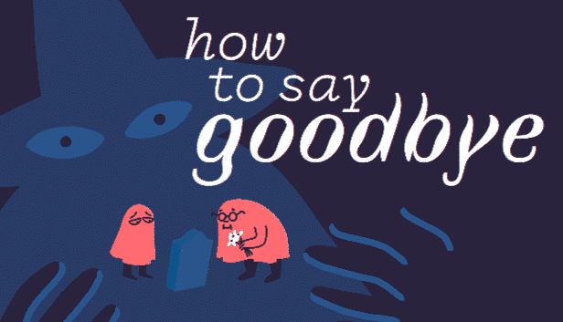
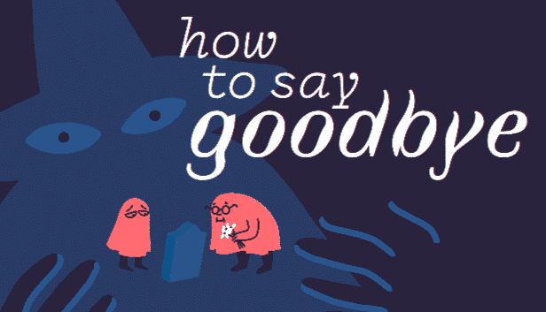

センス・オブ・ワンダー ナイト 2022
センス・オブ・ワンダー ナイト 2022
アワード受賞作品が決定
センス・オブ・ワンダー ナイト 2022
アワード受賞作品が決定
インディーゲーム開発者のピッチコンテスト「センス・オブ・ワンダー ナイト 2022（SOWN2022）」では、ファイナリスト8組がプレゼンテーションに臨み、審査の結果、アワード受賞作品が決定しました。
最高賞にあたるAudience Award Grand Prixに選出されたのは、オランダからエントリーした『SCHiM』（ファイナリスト名：Extra Nice）。審査委員から、「誰もが子どものときに影から影へと飛び歩いた経験があると思うが、その懐かしさと、ゲームにしたアイデアの新しさを感じた。色数を抑えたアートディレクションもすばらしい」とのコメントが寄せられました。
Audience Award Semi-Grand Prixには、日本の『狐ト蛙ノ旅 アダシノ島のコトロ鬼』（リアス）が決定。そのほか、“Best Technological Game Award” “Best Arts Award” “Best Experimental Game Award” “Best Game Design Award” “Best Presentation Award”が授与されました。
Audience Award GPの受賞者には賞金3,000USドル、各賞受賞者にはそれぞれ500USドルが授与されました。
-
Audience Award Grand Prix
SCHiM [Extra Nice]
-
Audience Award Semi-Grand Prix
狐ト蛙ノ旅 アダシノ島のコトロ鬼 [リアス]
-
Best Technological Game Award
Pastry Panic (with cat) [Yong Zhen Zhou]
-
Best Arts Award
狐ト蛙ノ旅 アダシノ島のコトロ鬼 [リアス]
-

Best Experimental Game Award
MORSE [ALJO Games]
-
Best Game Design Award
SCHiM [Extra Nice]
-
Best Presentation Award
Pastry Panic (with cat) [Yong Zhen Zhou]
SOWN ファイナリスト
SOWN ファイナリスト
SOWN審査委員により、インディーゲーム「選考出展」78タイトルのなかから、インディーゲーム開発者によるピッチイベント「SOWN2022」に出場するファイナリスト８組が決定しました。日本とフランスからは2組、そのほか英国、オランダ、スペイン、シンガポールから1組ずつ選ばれました。
ファイナリストは、9月16日（金）に開催する「センス・オブ・ワンダー ナイト2022」にてプレゼンテーションを行います。その模様は公式番組としてライブ配信。当日は、審査を経て、”Audience Award Grand Prix” を含む７つの賞を授与します。
また、同日、TGS2022インディーゲーム公式アンバサダーのポッキーさん（動画クリエイター）が、インディーゲーム選考出展78社のなかから、実況配信の観点で「センス・オブ・ワンダー」を感じる作品を選び、「ポッキー賞」を発表します。
「センス・オブ・ワンダー ナイト 2022（SOWN2022）」配信スケジュール
〇開催日時：2022年９月16日（金） 16時00分～
〇配信URL：https://youtu.be/_IDPLWvmvGs
-
MORSE
-

-
-
ALJO Games
英国

Use timing, tactics and telegraphy to try break the bitter attrition of the Great War in MORSE. Step into the shoes of Ida Brockett, a working class telegraphist flung into a pivotal role operating a mysterious machine at a blacksite buried deep in the British countryside.Enter dots and dashes to sink ships, shell trenches and shred airplanes, all while learning a lost language. Your telegraph key is one button with over 30 different outputs which you can use to zero in on German targets. Once in range, use the launch button to call down an arsenal of artillery shells to try tip the odds in your favour! In between your shifts, wander the grounds and get to know the other staff that work on the base and discover the secrets of the manor.Can you change the world with the push of a button?Accompanying the game is a bespoke physical custom controller made for a more authentic experience of play. This consists of a handmade telegraph key, a spring-loaded launch button, switchboard and plug, genuine 1930's headphones (used by naval telegraphists in WW2) all enclosed in a vintage briefcase. Here's some footage of the controller and game at EGX: https://www.youtube.com/watch?v=27M7zrm-ltoHere's some additional information about the controller from the ALT.CTRL.GDC video submission: https://www.youtube.com/watch?v=8-f_Hd7qmsQ
-
-
-
SCHiM
-

-
-
Extra Nice
オランダ
- 
SCHiM is a game about jumping from shadow to shadow in a challenging and lively environment. This 3D platformer takes elements of light & animation and adds them directly to the gameplay, delivering an experience that you will only find in SCHiM.
-
-
-
Rhodopsins
- 
-
-
札幌市立大学藤木・松永ゼミグループ
日本

この作品は色眼鏡インタフェースを利用した3人プレイ用協力型2Dプラットフォームです。色眼鏡を装着することにより、プレイヤーはメガネと同色で描かれたオブジェクト(敵やタイルなど)が視認できなくなります。本作品では3人のプレイヤーがそれぞれ赤・緑・青の異なる色眼鏡を装着した状態で同一のモニターを見ながらゲームをプレイします。それにより同一のモニターを見ているはずの三者が、それぞれ異なる情報を知覚しているという状況を作り出します。この状況下で、プレイヤー達は密接にコミュニケーションを取り合うことによりそれぞれが見えていない情報を補完し合います。この色眼鏡を用いた情報のシェアによって、3人のプレイヤーがまるで一つの生き物のように、共同体としてゴールに向かう感覚が得られます。きっとゴールを達成した時の達成感も3倍になるはずです。
-
- 
-
IDEA
-

-
-
TLR Games
スペイン
- 
IDEA is a game about discovering and sharing. Explore gorgeous landscapes, roll down highways and stumble upon welcoming cottages and abandoned dumpsters. Help your ideas find their way ? and share them with the world when they stop, before beginning your journey anew.
-
-
-
Pastry Panic (with cat)
-

-
-
Yong Zhen Zhou
シンガポール
触覚と体感を駆使したオルタナティヴ・コントロール・アーケードゲーム! さらに、やる気のない猫も登場します。
ペストリーパニック（＋猫）は、菓子工場で入力スライダーを入れ替えて焼く道具を操作する、一人用のアーケードスタイルのゲームです。入力は5つあり、こねる、切る、まぶす、詰める、焼くの動作に対応したハプティクスが設計されています。
入力内容はそれぞれ異なります。繰り返し押して生地をこねたり、オーブンをロックしてパンを焼いたり（ただし、取り出すのを忘れずに！）。
2本のベルトを伝って未完成のお菓子が近づいてくるので、プレイヤーはレシピに沿った一連の動作を行い、お菓子を完成させなければなりません。その手順とは？レシピは物理的な本になっており、プレイヤーはそれを閲覧して読むことになる。
入力は独立しており、プレイヤーが自由に動かしたり、入れ替えたりすることができます。プレイヤーは、同時に現れる2つのペストリー、読み取るべきレシピ、押すべき入力を処理しなければなりません。ペストリーパニックは、画面と周囲の現実空間の両方を考慮しながら、できるだけ多くのペストリーを作るというカオスな体験ができるゲームです。
(DeepLで翻訳されました。) -
-
-
DORDOGNE
- 
-
-
UMANIMATION
フランス
- 
DORDOGNE is a narrative adventure game in which you play as Mimi, a young woman visiting the house of her recently deceased grandmother, where she spent the summer of 1982. After that summer, Mimi and her parents didn't have contact again with Nora.20 years later, Mimi comes back to the house to revive the old memories, connect her family story points and find again her roots.
-
- 
-
狐ト蛙ノ旅 アダシノ島のコトロ鬼
-

-
-
リアス
日本
『狐ト蛙ノ旅 アダシノ島のコトロ鬼』は、イラストレーター/コンセプトアーティストの「リアス」が、自ら描く不思議な日本を舞台にした世界観を元に制作中の探索型３Dアクションアドベンチャーゲームです。
流れ着いたのはアダシノ島。この島で、あなたは狐の少女となって、蛙とともに旅に出ます。
鳥居や屋台の提灯、ネオンの看板に彩られた島。 その影に潜む不穏な気配は、もうすぐそばに——。 -
-
-
How To Say Goodbye
- 
-
-
ARTE France / Florian & Baptiste
フランス
How to say Goodbye tells the story of a character recently turned into a ghost, lost in an unknown world populated by spirits.In this narrative puzzle game, move the element of decor and the characters to guide the characters out of the liminal space between life and death in which they are trapped.Help them find their friends who are prisoners of a mysterious wizard and accompany them on their journey to the other side.The goal of each level in How to Say Goodbye is to guide your group of ghosts to the exit, symbolized by a door. To do so, move the scenery on a grid and make your way to the door. But dark forces seem to be holding you back against your will. Lost spirits called spleens will try to prevent you from escaping the liminal space by blocking the way to the door.Find your friends, avoid the spleens and find your way out of the liminal space!Inspired by illustration and children's literature (Tomi Ungerer, Tove Jansson, Antoine de Saint-Exupery, Maurice Sendak...), How to say Goodbye deals with the theme of grief with kindness and sensitivity.Still shocked by their recent passing, the ghosts of How to say Goodbye try their best to leave the liminal space they are trapped in. Together, they will have to discover how to mourn in order to accept their own death, and “move on”.
-
- 
センス・オブ・ワンダーナイトとは
センス・オブ・ワンダーナイトとは
「センス・オブ・ワンダー ナイト（SOWN）」は、”見た瞬間、コンセプトを聞いた瞬間に、誰もがはっと、自分の世界が何か変わるような感覚”＝「センス・オブ・ワンダー」を引き起こすようなゲームのアイデアを発掘することを目的とし、インディーゲーム開発者に作品をプレゼンテーションする機会を提供する企画です。今年で15回目を迎えます。プレゼンテーションは、会期2日目の9月16日（金）に幕張メッセ会場内スタジオにて実施予定で、その模様はTGS公式番組としてライブ配信します。当日は、審査を経て、”Audience Award Grand Prix” “Audience Award Semi-Grand Prix” “Best Technological Game Award” “Best Arts Award” “Best Experimental Game Award” “Best Game Design Award” “Best Presentation Award”を授与いたします。
※昨年の「センス・オブ・ワンダー ナイト 2021」の模様はYouTubeのTGS公式チャンネルでご覧いただけます。
https://www.youtube.com/watch?v=8lAzQ72SNuU
SOWNの目的
SOWNの目的
● 実験的で、創造的な、ゲームデザインやアイデアを含んだゲームを紹介すること。
● ゲームにおける「センス・オブ・ワンダー」の重要性を紹介し、ゲーム産業の活性化を図ること。
● 実験的で、創造的なゲームを開発している人たちに、将来へのチャンスの場を提供すること。
● ゲームデザインに新しい領域を作り出していくこと。
以下の5項目のいずれかに当てはまるゲームを対象にします。
-
❶新感覚
これまで見たことないような新しい体験を形作っているゲーム
自然言語処理、物理演算、画像認識、ジェスチャーコントロールなど、これまで利用されてこなかった技術をうまくゲームに応用した新しい種類の体験を提供するゲーム
-
❷新常識
ゲームという常識を揺さぶってしまうようなゲーム
ゲームの体験を通じて、プレイ後には、世界がちょっと変わって見えてしまうようなゲームそのものの新しい表現方法を模索しているようなゲーム
-
❸創発性
創発的な要素を持っているようなゲーム
ＡＩの相互作用や、ツール的な要素や、ソーシャル性といった要素を持たせることによってユーザーの活動自体をゲームが巻き込んでしまうようなゲーム
-
❹意欲刺激
多くの人が今すぐプレイしたいという感銘を与えられるゲーム
新しい体験を誰もが自分自身も体験したいと考え、そのために手元にとどめておきたいと思わず感じさせてしまうようなゲーム
-
❺驚き
とにかくなんだか訳が分からないけれど、すごいもの
とにかく観た瞬間に「これはスゴイ・・・」と感銘を与えられるゲーム
重要
「センス・オブ・ワンダー ナイト」は、Game Developers Conferenceで、2001年に始まった「Experimental Gameplay Workshop」から、多くのインスピレーションを受けています。このワークショップを成功させてきた多くの関係者ならびに友人達に、感謝の意を表します。
審査委員
審査委員
選考は、以下の「センス・オブ・ワンダー ナイト」審査委員によって行われます。
-

-
ゲームジャーナリスト
新 清士 氏
デジタルハリウッド大学大学院教授。VR剣戟ゲーム「ソード・オブ・ガルガンチュア」を開発。近著に『（仮）メタバースビジネス覇権戦争』（NHK出版）
-

-
Gametapas
Founder
Juan Gril 氏
20年間に渡って成功を収めているマスマーケットゲームを設計および制作してきた。現在はGametapasの創設者。以前は、成功したカジュアルゲームスタジオであるJoju Gamesの設立者だった。大手メディア企業とゲーム出版社の両方と協力して、12年間、PC、コンソール、モバイルプラットフォーム向けに、50タイトル以上のゲームを開発。Yahoo！Gamesの元メンバーの1人であった90年代後半にキャリアをスタートさせた。
-

-
東北学院大学
小林 信重 氏
国際ゲーム開発者協会日本（IGDA日本）同人・インディーゲーム部会（SIG-Independentt）正世話人。日本のゲーム自主制作とゲーム産業の関係の課題と解決策を社会科学的に分析した論文『ゲーム産業成長の鍵としての自主制作文化』（全文がオンライン公開中）により、東京工業大学より博士（学術）取得。2020年6月に編著『デジタルゲーム研究入門』（ミネルヴァ書房）を刊行。専門はメディア研究、文化社会学。
-

-
神奈川電子技術研究所 [同人サークル]
サークル代表、ゲーム企画、プログラム
北山 功 氏
2002年に神奈川電子技術研究所を立ち上げる。2010年にSOWNで『僕は森世界の神になる』をプレゼンして以来、2012年からSOWNの選考委員のメンバー。作品は『QUALIA』『ワタシハジカンヲトメル』『AGARTHA』など20作品以上に及ぶ。現在は人工生命を応用したゲームを製作中。
-

-
Videogame Ninja: Trusiga
Ramon Nafria 氏
Naeval氏は1992年、12歳でゲームを遊びはじた時に自分を表現するための最高のメディアだと気付いた。1999年からOnez, Ociojoven, Anaitgames, Eurogamer, Videoshock and Vandalなどのスペインのメディアに寄稿し、2003年からNerlaska, Gameloft, Digital Legends, Abylight, U Play, Blit Software and A Crowd of Monstersなどのゲームを制作してきた。複数の大学でゲームに関する講義を行っているほか、ゲーム開発協会のメンバーとしても活躍している。
-

-
NPO法人オキュフェス
高橋 建滋 氏
1998年（株）コーエー入社。「真・三國無双１～４」などに携わる。2008年に（株）クリーチャーズに転職し「ポケパーク」のディレクターなどを携わる。2013年にOculusRift DK1をキックスターターで入手し、VRソフト開発とVRソフトの発表会OfuFes（現Japan VR Fest）をスタート。 2014年にVR専業として独立。同年OcuFesをNPO法人化。以後日本のVR普及と世界のVR開発者のために精力的に活動中。
-
アウリン
取締役
駒形 一憲 氏
株式会社アウリンを起業し、2021年よりゲームやVTuberなどあらゆるキャラクターの製品企画・販売、バーチャルタレントのマネジメント管理・配信事業を展開中。大好きなゲーム業界のサポートをしたく、TOKYO GAME SHOW、Bit Summitなどの展示会や各地のゲームコンテスト等へのサポートも行なっている。好きなゲームジャンルは、アクションゲームとメトロイドヴァニア系で、ドット絵が好み。
-

-
ソニー・インタラクティブエンタテインメント
インディーズ イニシアチブ 代表
吉田 修平 氏
1986年ソニー株式会社に入社、1993年2月に現SIEに参画。以降、「プレイステーション」プラットフォーム向けに発売された数々のソフトウェアタイトルをプロデュースし、2008年よりゲーム制作部門であるSIE ワールドワイド・スタジオ プレジデントに就任。「ゴッド・オブ・ウォー」、「アンチャーテッド」各シリーズの制作を担当。2019年11月にインディーズゲームを推進するインディーズ イニシアチブ代表に就任。2016年10月に発売したバーチャルリアリティシステムPlayStation®VR開発のキーマンでもある。
-
講談社ゲームクリエイターズラボ
片山 裕貴 氏
2018年、株式会社講談社に入社。第四事業局クリエイターズラボ所属。
FRIDAY、月刊少年マガジンの編集者を経て、現在はゲームクリエイターズラボ（GCL）のチーフを担当。
GCLが支援するインディゲーム21作品の制作状況確認や、発売スケジュールの進行管理などを行っている。
-
iGi indie Game incubator
プロジェクトマネージャー
コーラ マティアス 氏
現在、株式会社マーベラスにて、iGi indie Game incubator（イギ）のプロジェクトマネージャーとして、日本のインディーゲーム開発者を技術面、ビジネス面でサポートし、世界に届けている。